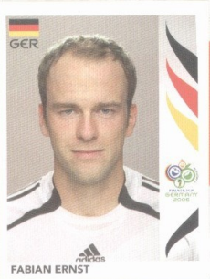

Miroslav Klose
Máximo goleador histórico de los Mundiales.
Oliver Kahn
Portero legendario, Balón de Oro en 2002.
Bastian Schweinsteiger
Mediocampista clave con gran liderazgo.
Michael Ballack
Capitán y motor del equipo alemán.
Philipp Lahm
Lateral habilidoso, autor del primer gol en 2006.

Fábian Ernst
Mediocampista defensivo con gran distribución de balón.
Torsten Frings
Mediocampista con gran disparo y resistencia.
Lukas Podolski
Extremo veloz con gran pegada.
Per Mertesacker
Defensa central seguro y experimentado.
Patrick Owomoyela
Lateral derecho con gran despliegue físico.
Bernd Schneider
Extremo habilidoso y preciso en los pases.
Arne Friedrich
Defensor lateral con gran resistencia.
Sebastian Deisler
Talentoso mediocampista con gran visión de juego.
Robert Huth
Defensor fuerte y seguro.
Kevin Kurányi
Delantero con gran presencia en el área.
Gerald Asamoah
Delantero con gran físico y entrega.
Tim Borowski
Volante con buen remate de media distancia.